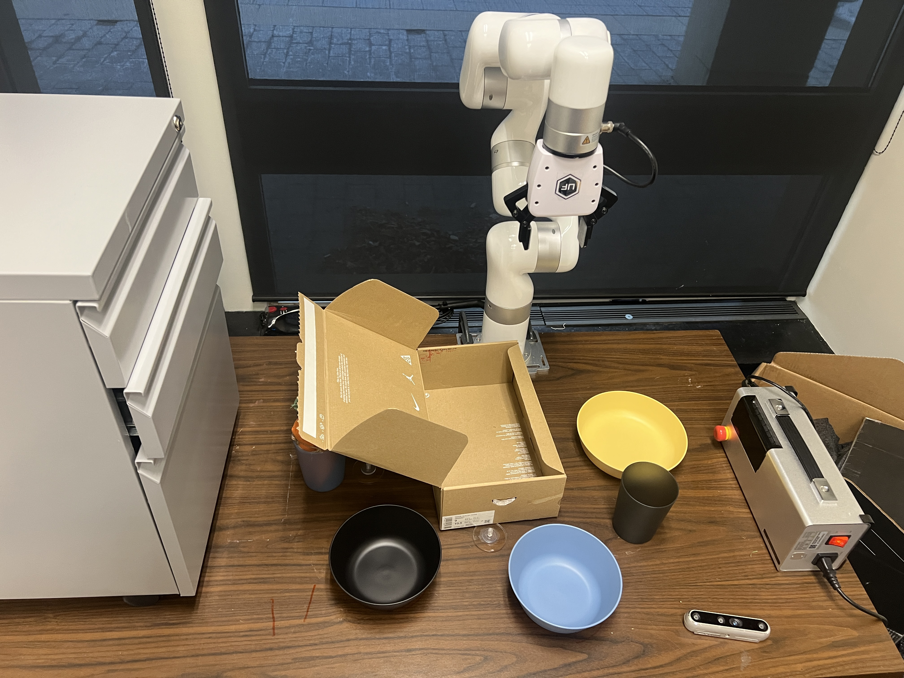
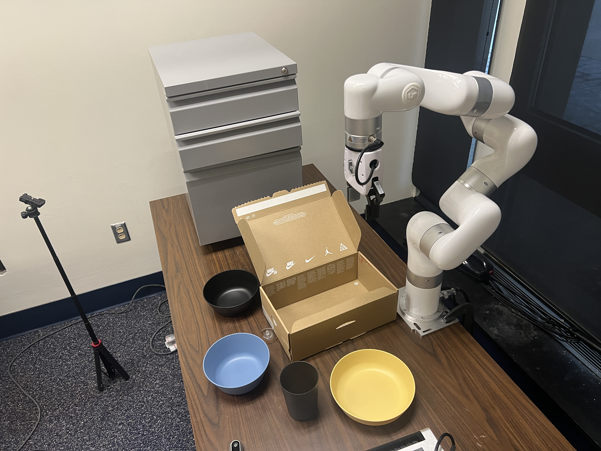
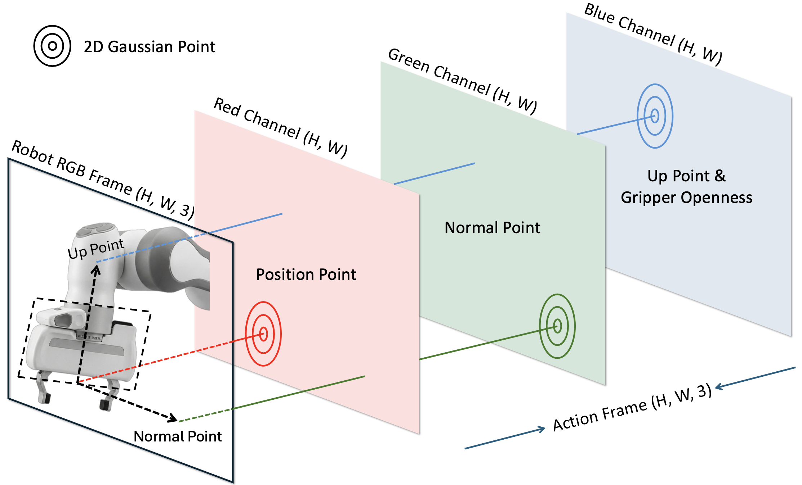

TL;DR. We propose Action Images, a pixel-grounded multiview action representation that turns 7-DoF robot control into action videos, enabling zero-shot control and unified video-action generation with a single video backbone.

Zero-shot Results
Our video backbone can generate high-quality results across diverse environments and viewpoints.
Instruction: Place the black cup in the paper box (Unseen environment, unseen embodiment)
View1

View 2

Loading 3D scene...
Abstract
World action models (WAMs) have emerged as a promising direction for robot policy learning, as they can leverage powerful video backbones to model the future states. However, existing approaches often rely on separate action modules, or use action representations that are not pixel-grounded, making it difficult to fully exploit the pretrained knowledge of video models and limiting transfer across viewpoints and environments. In this work, we present Action Images, a unified world action model that formulates policy learning as multiview video generation. Instead of encoding control as low-dimensional tokens, we translate 7-DoF robot actions into interpretable action images: multi-view action videos that are grounded in 2D pixels and explicitly track robot-arm motion. This pixel-grounded action representation allows the video backbone itself to act as a zero-shot policy, without a separate policy head or action module. Beyond control, the same unified model supports video-action joint generation, action-conditioned video generation, and action labeling under a shared representation. On RLBench and real-world evaluations, our model achieves the strongest zero-shot success rates and improves video-action joint generation quality over prior video-space world models, suggesting that interpretable action images are a promising route to policy learning.
Method
Our method builds a single video-space interface for observations and control. We rasterize each 7-DoF command into multi-view Gaussian action images aligned with RGB, decode predicted heatmaps back to continuous actions with a lightweight multi-view procedure, and fine-tune a pretrained video generator so masked latent training covers joint generation, action-conditioned video, video-to-action labeling, and video-only rollouts—yielding one model that both imagines the world and acts in it.
